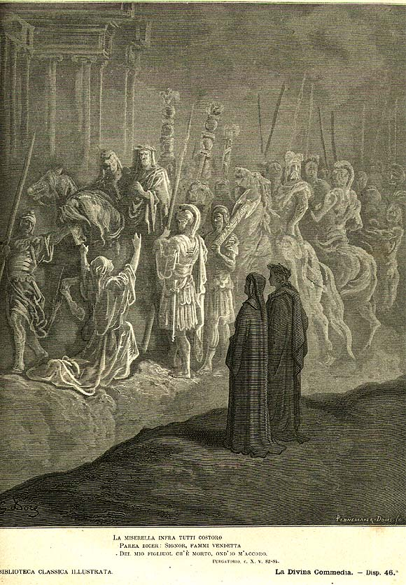

Песнь 10 из 33
Круг 1: Гордыня. Барельефы смирения

Кратко
Пройдя сквозь тесную расселину, поэты выходят на первый уступ. Стена его украшена белыми мраморными барельефами невиданного мастерства — «видимой речью», изваянной самим Богом: образцы смирения. Благовещение (Мария: «Се, раба Господня»), царь Давид, смиренно пляшущий перед ковчегом, и язычник-император Траян, склонившийся к просьбе бедной вдовы. Затем появляются сами гордецы — согбенные под тяжкими каменными глыбами, придавившими их к земле тем сильнее, чем тяжелее была их гордыня.
Главные моменты
- «Видимая речь» — божественные барельефы, превосходящие любое искусство.
- Три образца смирения: Мария, Давид, император Траян.
- Кара гордецов — нести камень, согнувшись к земле.
- Данте о суетности гордыни: мы «черви, рождённые, чтоб стать ангельской бабочкой».
Значение
Метод Чистилища: образцы добродетели на стенах + противоположная им кара для грешников.